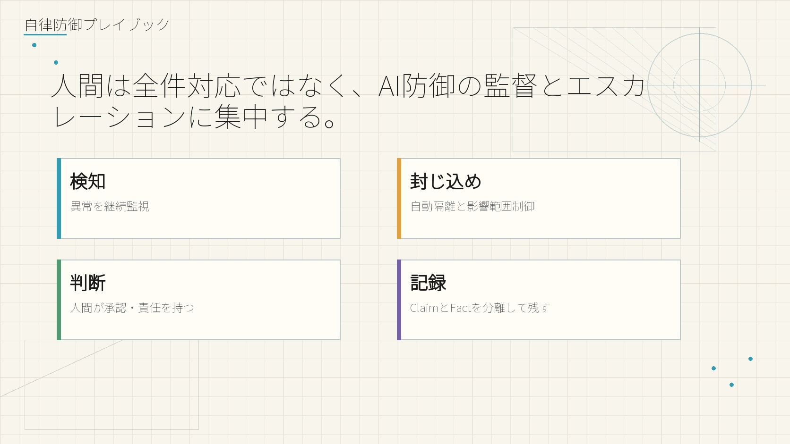
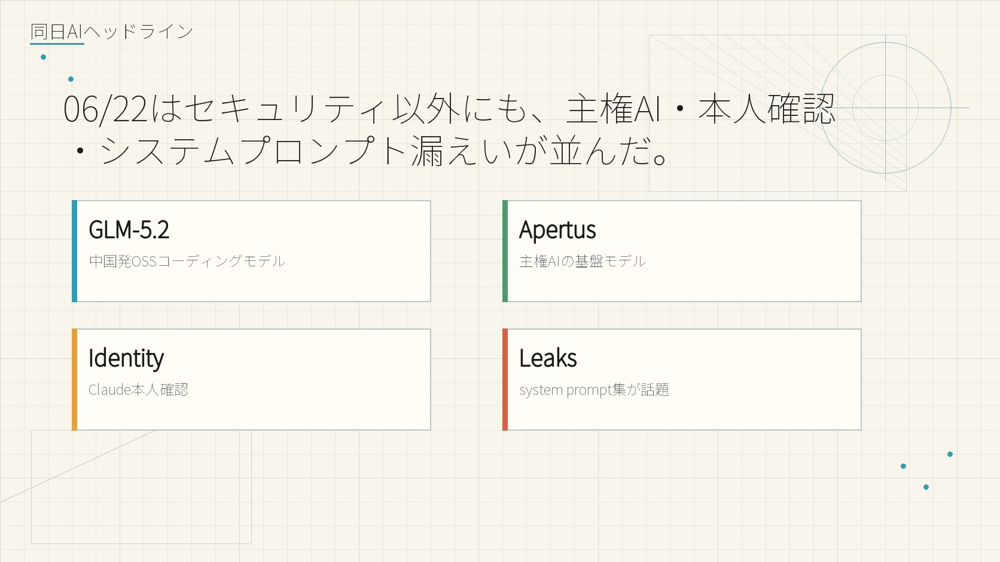
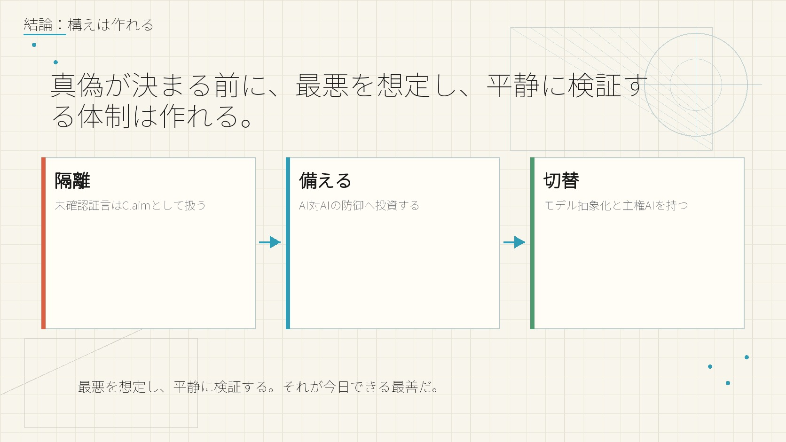

AI SECURITY CLAIM
数時間で、ほぼ全ての機密を。
公表された理由はAIジェイルブレイク。だが証言が指すのは、国家防御を数時間で貫通した実証済み攻撃能力だった可能性です。





核心的主張は一次ソースがソーシャル投稿1件のため、要検証（Claim）として扱っています。
公表された理由はAIジェイルブレイク。だが証言が指すのは、国家防御を数時間で貫通した実証済み攻撃能力だった可能性です。


